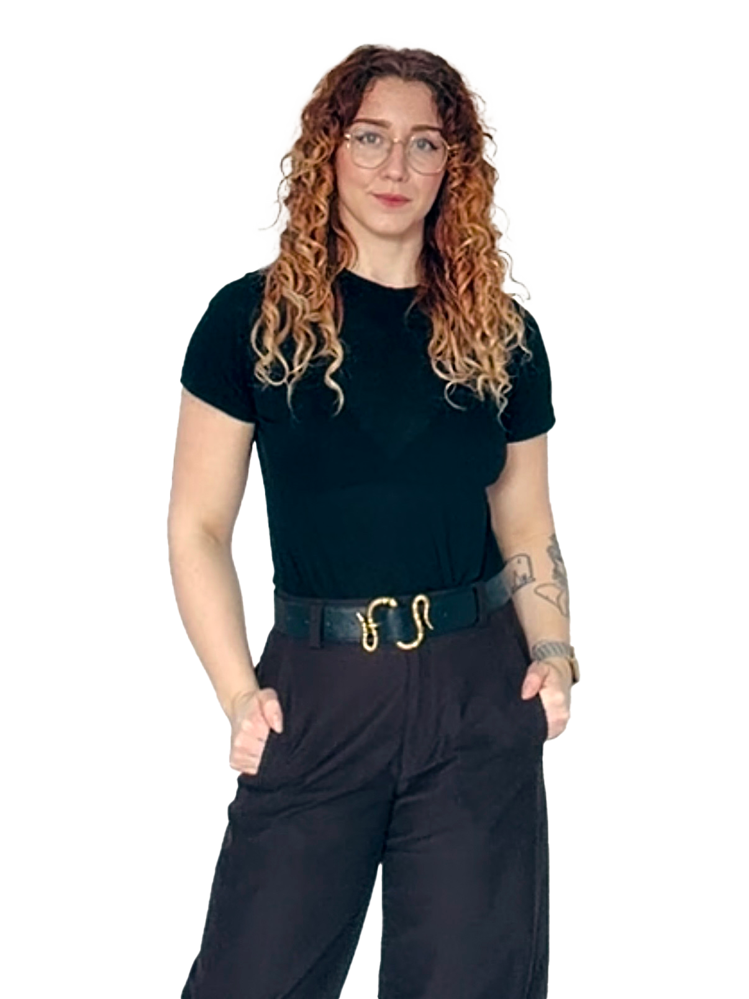

DJURBOOM
Djurboomen under pandemin
A Berghs data journalism project exploring Sweden’s pandemic pet boom and what followed.
Growth takes curiosity, experimentation and a willingness to rethink. I bring a creative eye, a business owner’s perspective and plenty of questions.
Growth Marketingat Berghs School of Communication.

I’ve produced the campaign images, managed the webshop and handled customer service. Now I’m learning how to connect that experience with data.
I like finding out what makes people stop, care and act. At Berghs, I’m learning to use data to guide growth: understand the customer journey, turn questions into hypotheses and test what improves conversion.
I’ve run Michelle Rickardsson Photography AB since 2017, photographing and retouching fashion and portraits.
My freelance clients have included J.Lindeberg, Warner Music, Stockholm Stad, Damernas Värld and Nöjesguiden.
At WeSC, I produced campaign images, lookbooks and product photography, led shoots in Sweden and worked with the New York team. I also managed the worldwide webshop, including design, orders and customer service.
The job didn’t stop when the images were delivered.
At Nordic Green Design, I’ve worked as a team lead and helped create plant installations and moss walls. It’s creative work in three dimensions: reading a space, finding the right placement and bringing it all together with the team and the client.
So yes, some of my experience with growth has been quite literal.